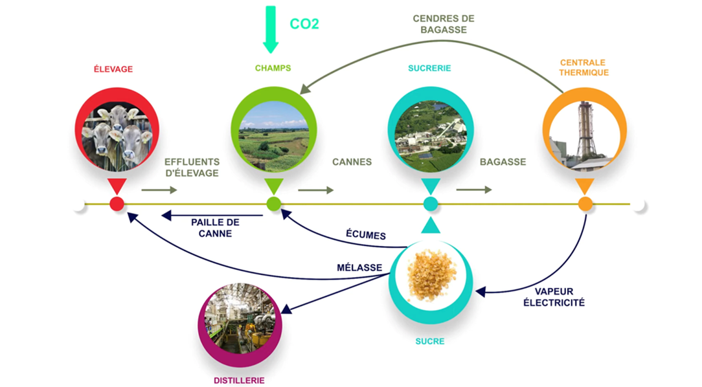

GARDEL SA
Sucrerie de Guadeloupe
0%
Parcours d'intégration
L'histoire continue, avec vous
chez GARDEL SA
Depuis 1869, GARDEL SA cultive l'excellence sucrière au cœur de la Guadeloupe. Ce livret vous accompagne pas à pas dans votre intégration.
Qui sommes-nous
De l'habitation Saint-Alary aux défis du XXIe siècle, GARDEL SA porte plus de 150 ans de passion sucrière.
Nos implantations
De la réception de la canne à l'expédition maritime, chaque site joue un rôle précis dans notre chaîne de valeur.
Nos produits
Chez GARDEL, rien ne se perd, tout se valorise. La canne génère du sucre, de l'énergie, du rhum et des amendements agricoles.


Économie Circulaire
Les cannes récoltées arrivent à la sucrerie et génèrent une chaîne de valorisation complète.

Tri des déchets
Sur le site du Moule, vous trouverez des poubelles de tri à ces emplacements :
Notre savoir-faire
De la réception de la canne à la mise en sac, découvrez le processus complet qui transforme la canne en sucre. Cliquez sur chaque étape pour en savoir plus.
Nos engagements
GARDEL SA s'engage sur 7 axes stratégiques et porte des valeurs fondamentales incarnées par chaque collaborateur.
Notre sécurité
La sécurité est notre priorité n°1. Chaque collaborateur doit maîtriser les gestes qui sauvent et les procédures d'urgence.
Votre vie chez GARDEL
Outils, avantages, espaces de vie, représentants du personnel, réglementation… Explorez chaque onglet.

Nos équipes
Chaque pôle joue un rôle clé dans notre organisation. Découvrez les missions de vos futurs collègues.